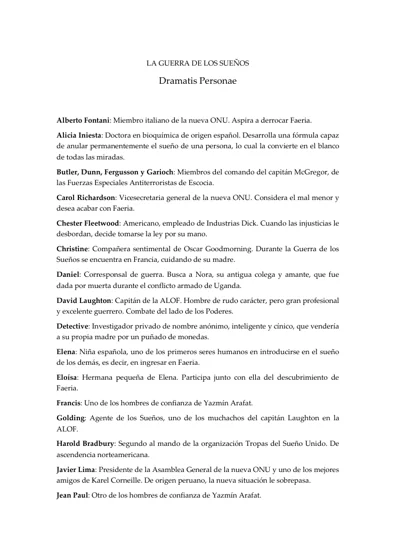

Guía de personajes de La guerra de los sueños
Material promocional del antiguo blog · PDF · 5 páginas
Descargar
Obras anteriores
Espiral · 2013
Libro con dos obras
Suenan tambores de guerra. Los soldados avanzan con las armas en ristre, dispuestos a matar, dejando el miedo en las zanjas. Los tanques alzan su virilidad de cromo al cielo tiznado de nubes negras. Se abre el telón y comienza el baile más cruento de la humanidad.
La guerra de los sueños, novela épica coral de ambientación onírica y destellos filosóficos, describe un nuevo universo que se manifiesta a través de los sueños, así como el conflicto sangriento que provoca su aparición. Disparatada e irreverente, La penúltima danza del Griwll es una parodia noir repleta de clichés premeditados que remeda el asalto a la fortaleza, el camino del héroe, las invasiones alienígenas y el terror de los estados totalitarios.
De monstruos y trincheras reúne estas dos piezas literarias cuyo denominador común es el conflicto, tanto psicológico como armado. Suenan tambores de guerra, una guerra en escenarios exóticos. Una guerra donde los contendientes, como en todas las guerras, son monstruos, a veces literales y a menudo bastante humanos.
CUANDO LOS SUEÑOS SE CONVIERTEN EN REALIDAD... SOLO CABE LUCHAR POR CONSERVARLOS.
Una madrugada, dos niñas se despiertan confusas: han soñado el mismo sueño. No son las únicas. Pronto la humanidad al completo participa de una ensoñación común con tan solo cerrar los ojos. Es la génesis de Faeria, un universo por derecho propio, una telaraña onírica que se extiende por todas y cada una de nuestras mentes.
Pero el país de los sueños no tarda en agitar la sociedad del antiguo mundo a través de una notable diversidad de reacciones. Lo que para unos representa la oportunidad de cambiar las cosas, de alcanzar la felicidad en una tierra no cimentada sobre intereses económicos sino sobre el poder de la imaginación, otros lo ven como una amenaza para el statu quo. Y cuando las opiniones se radicalizan, el conflicto es inevitable: grupos culturales y facciones políticas se acabarán enfrentando por el control de este nuevo feudo de la humanidad. Hay quienes tratarán de manipular el sueño colectivo para servir a sus propios intereses, los que defenderán Faeria a toda costa… y quienes no cejarán en su empeño por destruirla.
El campo de batalla está servido. Las piezas se hallan dispuestas sobre el tablero, una pléyade de personajes que entrarán en conflicto tanto en las calles del mundo real como en el más fabuloso de los escenarios; un universo donde reina la imaginación y en el cual absolutamente todo es posible.
Así que es cierto, es posible vencer al miedo. Se lo puede anular a través de la rabia, al menos durante un par de horas. No necesito más; dos horas serán suficientes para lo que tengo que hacer: adentrarnos en la fortaleza de los temibles griwlls y dar el mayor golpe de estado de la historia de la humanidad, como miembro de un grupo de insurgentes integrado por soldados venidos a menos, policías alcohólicos, doctores en paro, gemelos enloquecidos, bellezas ninja y hasta un robot. Los alienígenas nos rodean por doquier. Aprieto el gatillo al tiempo que el esfínter, porque no deseo enlodarles a mis anfitriones la alfombra de excremento sino de sangre. La Reina se encuentra al alcance de nuestras balas hinchadas de cerveza, pero lo que ninguno sabemos es que el nido de los dictadores encierra también un buen catálogo de secretos.
La penúltima danza del Griwll es una gamberrada literaria, una tragedia desenfadada, una disparatada e irreverente parodia noir que remeda el clásico asalto a la fortaleza inexpugnable y el camino del héroe, al tiempo que satiriza las historias de invasiones alienígenas y el terror de los estados totalitarios.
Copias conservadas en mi archivo de las publicaciones originales, con sus textos e imágenes recuperados.

Material promocional del antiguo blog · PDF · 5 páginas
Descargar